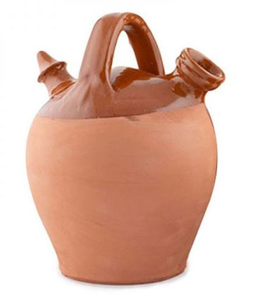

Debe tener unelemento padre con la propiedad Display:grid
Direct child element(s) of the grid container automatically becomes grid items.

Un botijo es un recipiente de barro cocido poroso, diseñado para beber y conservar fresca el agua. En alfarería se define como vasija de cuerpo esferoide, un asa en su parte superior, y con dos o más orificios